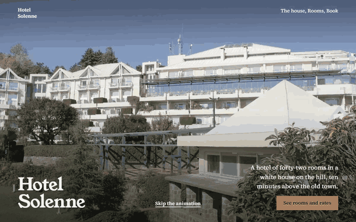

WebTween
Website animations that work like Roblox's TweenService, plus scroll video in one line.

Tweens ✦Timeline ✦ScrollableFrame ✦Reveal ✦Parallax ✦TextReveal ✦Marquee ✦Tabs ✦Accordion ✦Lightbox ✦Countdown ✦Spin360 ✦Hotspots ✦
Try it live
Every piece, used the way you'd really use it. Click, drag and scroll.
Start in a minute
One file, no install. If you've made a tween in Roblox, you already know how.
<script src="webtween.js"></script>
<script>
const info = new TweenInfo(1, "Quad", "Out")
TweenService.Create("#box", info, { X: 200, Transparency: 0.5 }).Play()
new Reveal(".fade-in") // fade in as you scroll to them
new Lightbox(".gallery img") // click a photo to see it big
</script>